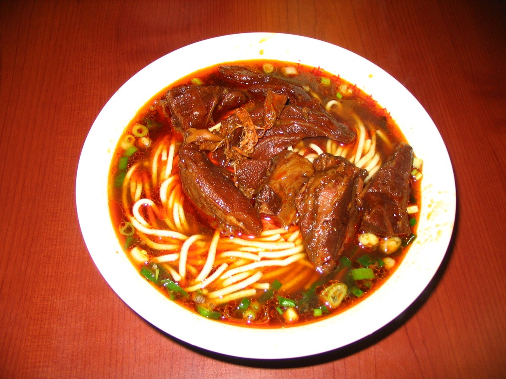
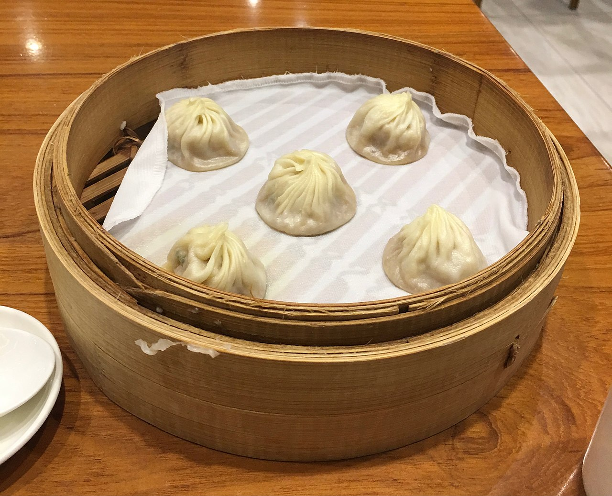
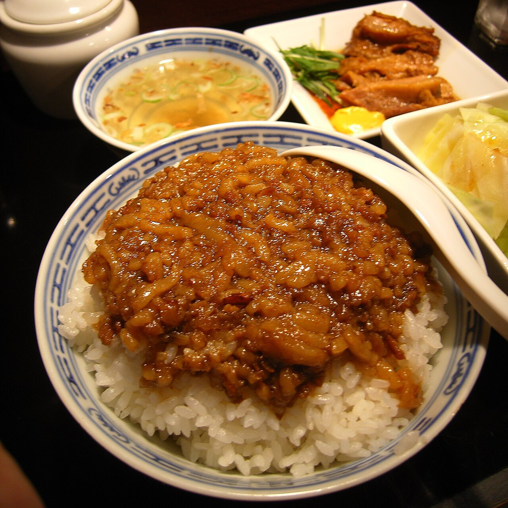
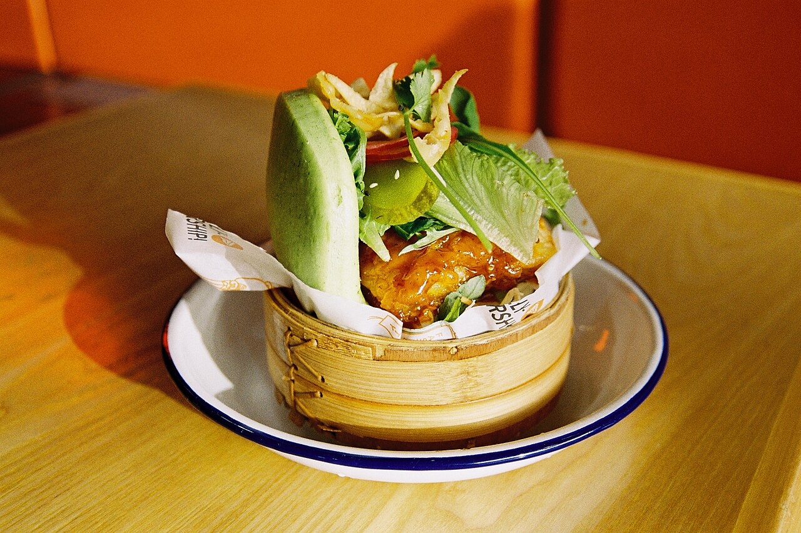
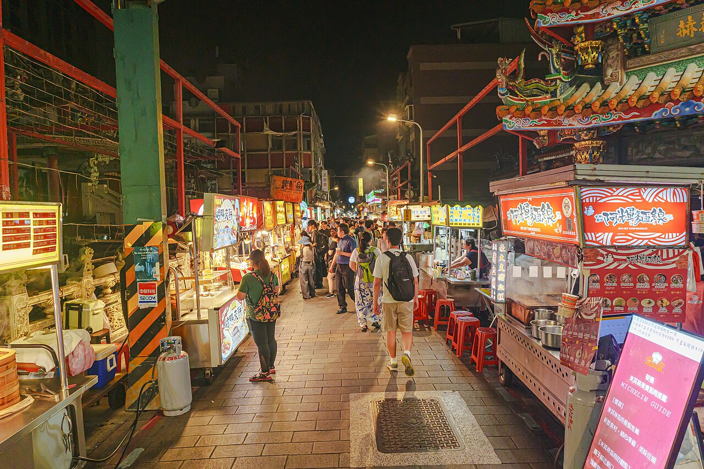
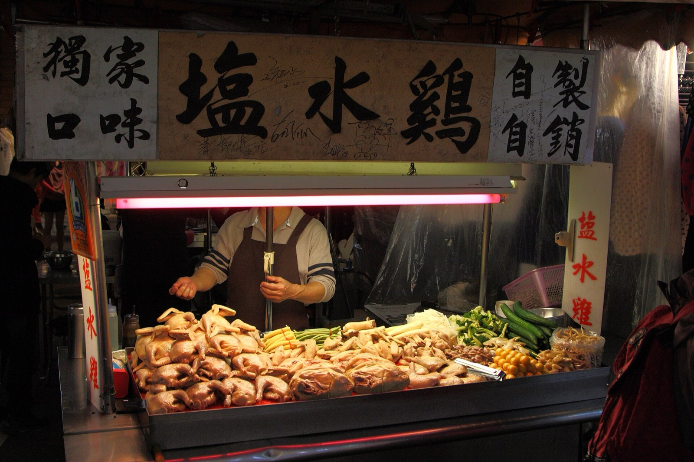

樓下就係戰場
宿舍樓下有萊爾富同全聯，宵夜同補貨唔使出遠門。行去景新街同華新街都係十幾分鐘，南洋料理密度全台最高。
肚餓，就出發。
由機場到宿舍，一路食到台大。
一碗熱麵、一杯珍奶、一條未行過嘅巷。
寫畀住圓通嘅你，將陌生城市食成熟悉嘅日常。

唔使做攻略做到肚餓。
我哋幫你整理好，帶住胃出門就得。
01 / THE NEIGHBORHOODS
由落機嗰一餐，到放學後嘅宵夜。
揀一個地方，開始你嘅美食散步。

01桃園機場 → 台北車站

02圓通 · 南勢角 · 華新街

03公館 · 台大 · 溫州街

04雙北街巷 · 夜市 · 老字號
以上只係生活圈氣氛照片，唔對應個別餐廳；下方店舖相片另附核實來源。
THE BIB GOURMAND NOTEBOOK / 台北・新北
現屆推介，連埋曾經上榜嘅老朋友。
唔靠印象貼標籤，每一個入選年份都有出處。
02 / GOOD THINGS TO EAT
兩套分類可以同時使用：先揀地區（到埗美食／圓通宿舍美食／台大美食／其他），再揀種類（嘢飲／嘢食／甜品）。 可以按推薦指數或者人均價錢排序，亦可以開住 營業中，按收錄時間表篩選。必比登係獨立篩選，可再揀城市同種類；未核實營業時間的店不會出現在「營業中」。
人均與推薦指數為原指南參考，非米其林評分；新增必比登未核實的價錢、評分及營業時間留空。店舖只用可核實並有再使用授權的照片，其餘保留純文字。機場分店不沿用品牌其他店的獎項。
呢個組合暫時未有符合條件嘅店。
03 / THE WAY HOME
桃園機場 → 機場捷運 → 轉捷運到 南勢角站 → 宿舍。全程約 70–90 分鐘， 沿途每一站都有嘢食，所以路程本身就係「到埗美食」嘅起點。
第一航廈（T1）同第二航廈（T2）都有大量餐廳，T2 4 樓出境／入境層最集中。 如果已經肚餓，可以先喺機場食埋先上車。
搭機場捷運（紫色線），普通車約 38 分鐘、直達車約 38 分鐘到 A1 台北車站。 車站 B1 有台鐵便當同便利店，係最平嘅落機第一餐。
由台北車站轉板南線（藍線）或淡水信義線（紅線）再接中和新蘆線（橘線）， 往南勢角方向，到終點站落車。行李多嘅話，避開 17:30–19:00 下班人潮。
宿舍喺新北市中和區工專路 26-38 號（台科大華夏校區對面）。 出站後可以行 15 分鐘、騎 U-bike 5 分鐘（4 號出口）， 或者搭圓通接駁巴士（2 號出口，約 20 分鐘一班，住宿生免費）。
04 / YOUR EVERYDAY MAP
宿舍喺中和南勢角，去公館台大要轉乘綠線。 撳號碼睇聚落推介；呢張係生活圈示意圖，實際路線請用地圖確認。手機可左右滑動。
05 / NOTES FROM THE NEIGHBORHOOD
住得耐就知嘅六件事。
宿舍樓下有萊爾富同全聯，宵夜同補貨唔使出遠門。行去景新街同華新街都係十幾分鐘，南洋料理密度全台最高。
好處：一定有位坐。壞處：去台大要轉線。去公館台大約 20 分鐘，計好時間先出門。
圓通接駁巴士由南勢角站 2 號出口開出，約 20 分鐘一班，住宿生免費。錯過咗就行 15 分鐘或者搵 U-bike。
公館商圈好多店憑學生證減 NT$10–20，一餐慳一杯珍奶錢，一個學期就係幾餐。
台大校內小福樓、小小福同水源市場係懶人恩物，人均 NT$80–120 就食得飽。
南勢角陽春麵開到凌晨 1 點、珊珊臭豆腐開到 3 點；但華新街多數下晝就收，晏覺起身就冇得食。

「宿舍唔係只係瞓覺嘅地方。
認識一座城市，由認識樓下嗰碗麵開始。」
— 台灣美食 · 寫畀每一位啱啱落機嘅你